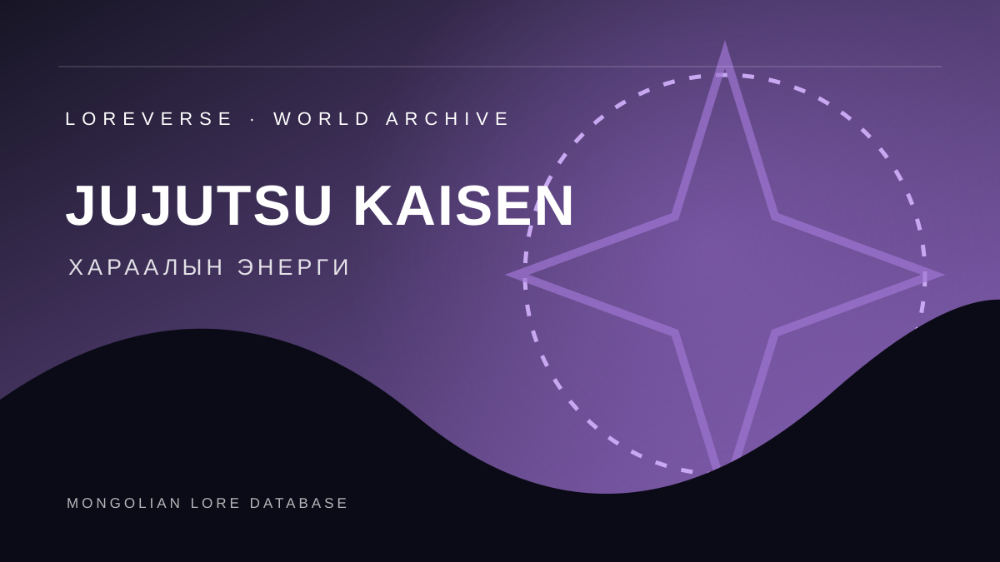

Ертөнц ба түүхэн нөхцөл
Орчин үеийн Япон дахь энгийн хүмүүс хараалыг ихэнхдээ харж чаддаггүй. Жюүжүцүгийн сургуулиуд, овгууд болон удирдах зөвлөл нь хараалын аюулыг хянах гэж оролддог ч дотоод улс төр нь ихээхэн зөрчилтэй.
Хүмүүсийн сөрөг сэтгэл хөдлөлөөс хараал үүсдэг ертөнцөд Итадори Юүжи Сүкүнагийн хараалт хурууг залгиж, хараалын хүчийг өөртөө шингээнэ. Ингэснээр тэр хараалтай тэмцдэг жюүжүцүгийн ертөнцөд хөл тавина.

Орчин үеийн Япон дахь энгийн хүмүүс хараалыг ихэнхдээ харж чаддаггүй. Жюүжүцүгийн сургуулиуд, овгууд болон удирдах зөвлөл нь хараалын аюулыг хянах гэж оролддог ч дотоод улс төр нь ихээхэн зөрчилтэй.
Хараалт энерги нь сөрөг сэтгэл хөдлөлөөс үүснэ. Төрөлхийн хараалт техник, Эсрэг хараалт техник, Хар гялбаа, Өргөтгөсөн домэйн нь тулааны үндсэн ойлголтууд. Домэйн бүрийн дүрэм, баталгаатай онох нөлөө нь хэрэглэгчээсээ хамаарна.
Итадори Юүжи — Сүкүнагийн сав болсон сурагч; Фүшигүро Мэгүми — Шикигами ашигладаг жюүжүцүчин; Күгисаки Нобара — алх, хадаас ашигладаг тулаанч; Гожо Саторү — онцгой хүчтэй багш; Сүкүна — хараалын хаан.
Токио болон Киотогийн жюүжүцүгийн сургуулиуд, Зэнъин, Гожо, Камо овгууд, хараалын сүнснүүд болон хараал хэрэглэгчдийн бүлгүүд хүчний тэнцвэрт нөлөөлнө.
Юүжигийн Сүкүнаг залгих үйл явдал → Токио сургуулийн сургалт → Хараалын умайн хэрэг → Киотогийн солилцооны тэмцээн → Шибүяагийн хэрэг → Цаашдын томоохон мөргөлдөөн.
Албан ёсны анимэний сайт: https://jujutsukaisen.jp/
Манганы төгсгөлийн үйл явдлыг анимэний одоогийн дасан зохицуулсан хүрээнээс тусад нь тэмдэглэх.
Энэ хуудас нь LOREVERSE-ийн Монгол хэл дээрх фэн судалгааны материал. Албан ёсны бүтээл биш. Канон, дасан зохицуулалт, фэн таамгийг тусад нь тэмдэглэн шинэчилнэ.